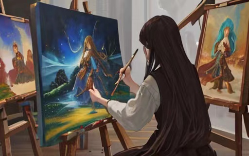
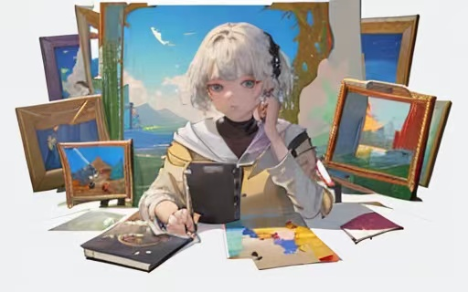
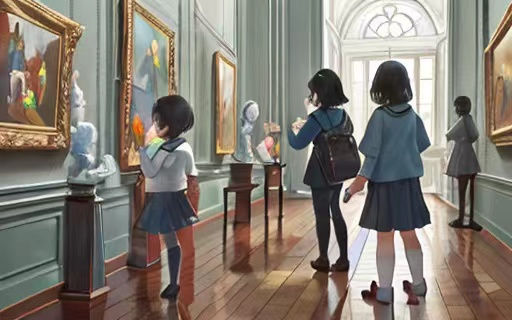
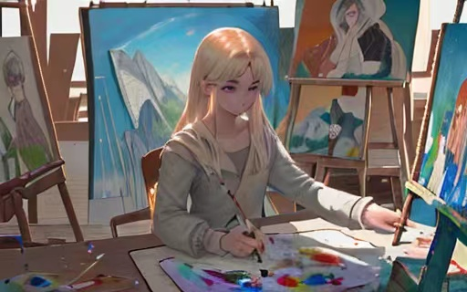

公开课
让孩子学艺术，从何时开始？
学习艺术应该从什么时候开始呢？这是一个很常见的问题，许多家长会在咨询艺术机构时提出这个问题。

首先，在孩子很小的时候，家长不应该让孩子去参加任何机构的艺术课程。这是因为在这个时期，家长可以更好地帮助孩子去学习。此外，艺术教育应该是一个长期的过程，不应该只是为了追求某种短期效果而去学习。

很多家长会在孩子三四岁的时候开始考虑是否要让孩子去上绘画班。他们认为如果孩子越早开始学习艺术，就越有可能成为艺术家。此外，在孩子上小学之后，家长仍然会有这样的疑虑，比如什么时候让孩子开始学习素描，什么时候让孩子开始学习学院派的那套技法和理论体系等等。
家长不应该急于让孩子去上艺术课程，而是应该先了解一些艺术的基础知识，比如颜色、构图等等。这些基础知识可以在日常生活中学习，比如看一些艺术类的书籍或者看一些电影、电视剧。这样，孩子可以在自然的环境中学习艺术，而不必在机构中接受死板的课程安排。
孩子在学习艺术的过程中需要有自己的兴趣和热情。如果孩子没有兴趣，就算再好的机构也不会让孩子有所收获。因此，家长应该根据孩子的兴趣去选择适合的艺术课程。
艺术是一种长期的积累和学习过程。即使孩子没有成为一名艺术家，也可以从中获得很多乐趣和成长。因此，家长不应该将艺术教育仅仅看作是一种功利性的工具，而是要以孩子的兴趣和个性为导向，给孩子提供多元化的艺术体验和机会。这样不仅可以激发孩子的创造力和想象力，也能够帮助孩子发现自己真正感兴趣的领域。
另外，家长可以通过阅读、观察、参观博物馆等方式，帮助孩子建立艺术的基础知识和审美意识，培养对不同艺术形式的理解和欣赏能力。这些都是孩子未来进行深入学习和创作的基础。对于已经具有一定艺术基础的孩子，家长可以鼓励他们参加一些更高水平的艺术培训，比如大师班、艺术夏令营等。但是，要避免盲目追求技能和成果，更重要的是要保持对孩子兴趣和发展方向的关注，不断给予他们支持和鼓励。

当前教育机构的不稳定性和流动性增强的现实，导致许多老师在机构之间流动，这对于孩子的学习会造成影响。对于家长来说，选择一个稳定的教育机构是非常重要的。在闲鱼上有人在转让某个知名教育机构的课程，这表明很多家长在考虑转移孩子的学习场所。许多人建议家长退费，并选择一所更好的教育机构，但是选择一个稳定的教育机构并不是一件容易的事情，因为当前市场的问题和疫情都给机构带来了很大的压力。
传统的艺术学院、专业绘画培训机构、连锁机构和工作室等。每种教育形式有其优劣势，需要根据个人情况和需求进行选择。传统的艺术学院一般注重基础和理论，而专业绘画培训机构和连锁机构则更注重实际技巧和应用，而工作室则更具有灵活性和个性化。
要选择正规、有信誉的机构，尤其要注意机构是否有资质和教师的背景和教学水平。虽然有些工作室可能会依托传统连锁机构的体系，但也有可能出现老师水平不高或者环境不好的情况。因此，家长在选择机构时需要特别注意这些问题。
绘画教育的童子功，即眼界。眼界是绘画教育中非常重要的一环，也是长期的积累和磨练。相比于音乐等其他艺术形式，美术的童子功不在于技巧的练习，而在于对艺术作品、文化和历史的认知和理解。因此，除了正规的教育机构，也可以通过阅读、参观美术馆等方式来拓宽眼界。

绘画教育是一个复杂的系统，需要考虑到多个方面的因素。在选择教育机构时，要根据个人需求和情况综合考虑，并选择有资质、有信誉、有经验的机构。同时，眼界的拓宽也是非常重要的，需要通过多种方式进行积累和磨练。